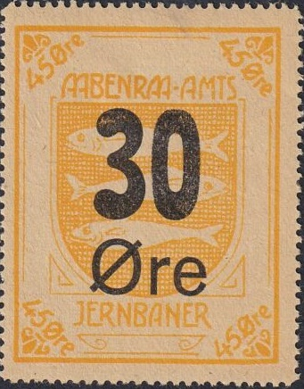
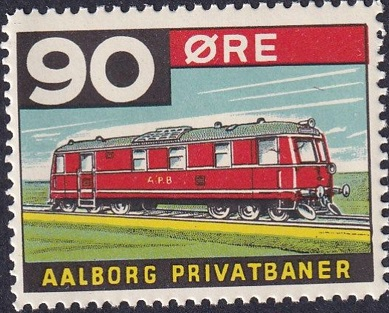

Return To Catalogue - Denmark - Denmark Miscellaneous - Denmark Railway Stamps, overview
Note: on my website many of the
pictures can not be seen! They are of course present in the
catalogue;
contact me if you want to purchase it.

A 30 o blue must have been issued in 1930. I have not seen this stamp.


A 90 o brown also exists.
"GODSFRIMAERKE AALBORG PRIVATBANER" with coat of arms
of Aalborg, no outer framelines

"GODSFRIMAERKE AALBORG PRIVATBANER" with coat of arms
of Aalborg, with outer framelines. I've also seen 25 o green.


1919: "85 Øre." on 45 o yellow and "100
Øre" on 25 o green
1931 Very similar design but smaller size and lettering
different; I've also seen 10 o blue, 25 o green, 50 o grey and 60
o red.

Several more pictorial designs were issued, such as 60 o image of a house, 125 o (coat of arms of Aalborg), 75 o (map of the railway, even in two different types, one with a little ship added), 200 o (statue of a bull). Also image of a bridge: 2 Kr and "225 ØRE" on 2 Kr. .
See also: http://www.vodskov-posthistorie.dk/Plancher/Oversigt/OVS-Jernbanemaerker.htm
1900: Coat of arms of Aalborg, wild boar and tree. 10 o green.
I've also seen 20 o red.

25 o red. I've also seen a 25 o brown in this design with a 1917
cancel. The Hammel -Aarhus Railway issued very similar stamps.


In this type I have seen:
With large "ØRE": 25 o red, 60 o light blue
With small "Øre" 25 o red, 50 o orange, 60 o light
blue, 80 o green.

Aarhus - Odder - Hou, I have seen these stamps with different
control numbers at the bottom or a star at the bottom, issued
from 1908 to 1953


30 o with different control numbers.
1899:

10 o grey. A 20 o orange also exists.
Sorry, no image available
In 1916 a 10 o brown stamp was issued.
Another 15 o brown was also issued in 1916.
Some provisional overprints were issued in 1920 and 1930:
"30" on 15 o brown (1920) and "20" on 10 o
brown (1930, 4 types)

90 o brown.